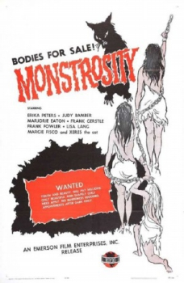

Also known as:Monstrosity (original title)
Country:United States, 65 minutes
Spoken languages:
Genres:Horror, Sci-Fi
Director(s):Joseph V. Mascelli
Writer(s):Dean Dillman Jr., Sue Dwiggins, Vy Russell
Video Codec:Unknown
Number: 1479


Certification:
Storyline:
A rich but unscrupulous old woman plots with a scientist to have her brain implanted in the skull of a sexy young woman.
Cast:


Medium: Original DVD,
Comments: Part of: Sci-Fi Classics - 50 Movies
Loaned: No
Aspect ratio: Unknown